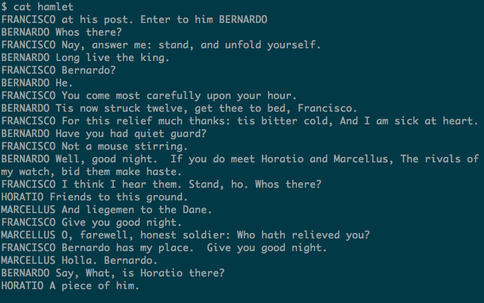
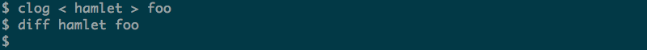
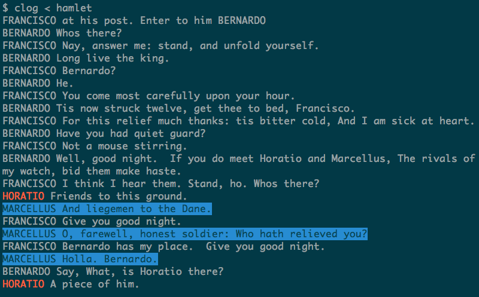
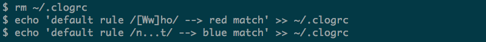
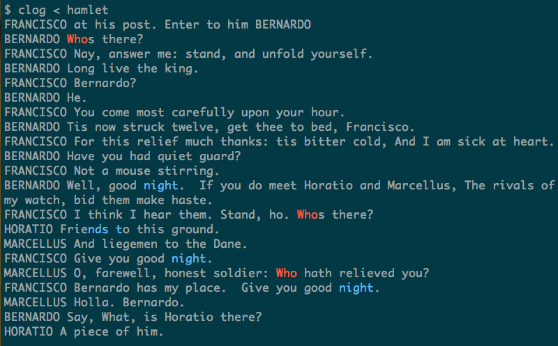
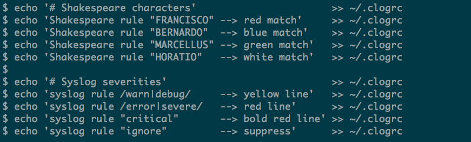
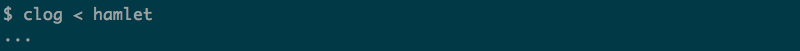
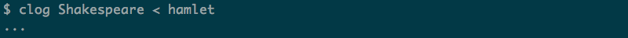

Clog
Clog is a colorized log tail utility. It can spot patterns in an input stream and colorize or suppress the lines. It can also decorate the lines with time- or date-stamps.
git clone https://git.tasktools.org/scm/ut/clog.git
About
Clog is useful for watching log files. It can highlight important information or hide it.
- Colorize patterns in the input
- Colorize lines in the input
- Suppress lines matching a pattern in the input
- Add timestamps to all lines
- Add datestamps to all lines
Demo
Clog is a colorized log viewer. It can spot text on a line in a log file and apply color to it, a little like this:
This would spot the text ' error ' in access.log and mark up the matched text. This is what clog does.
Sample Data
We start with a fragment of text, from the opening scene of Hamlet. This is just an example, but will illustrate how clog can be applied to log files.

Simple Filter
By default, clog is a pass-through filter that does nothing:

Timestamps
Clog has some basic features, for example it can prepend timestamps to the lines:

Rules
Now we add a rule to colorize some text:

This rules says that if the text "HORATIO" is found, then the matching text is colored red. The 'default' keyword is a rule section, which allows multiple rules sets - more on that later.

Another rule:

This rule says that if the text "MARCELLUS" is found, then the matching line is colored with a blue background.

Additionally lines may be suppressed:

This rule will suppress the line, instead of coloring it:

Regular Expressions
So far the rules have all involved text string matches. Clog also supports regular expressions, with a slight modification to the rule syntax:

These rules color 'Who' or 'who' red and the word 'night' (indeed anything matching n...t blue.

Rule Sets
The section name can be used to maintain several rule sets. Here there are two rule sets:

Now we can invoke the default set by not specifying a rule set:

Or we can select just the Shakespeare set, by providing the rule set name as an argument:

Or we can select multiple rule sets if we wish, but these will not include the default set: